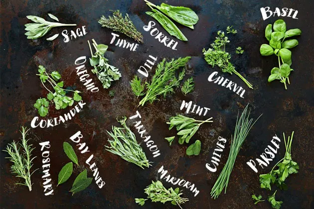

Products of all types of Food
- Fresh Produce : Vibrant fruits and vegetables, harvested at their peak, provide essential vitamins and minerals.

- Grains : Staple crops like wheat, rice, and oats serve as the foundation for countless dishes, offering energy and nutrients.
- Dairy : Milk, cheese, and yogurt contribute essential calcium and protein, adding richness and flavor to a variety of meals.

- Meats : From succulent cuts to processed varieties, meats supply vital proteins and fats for muscle function and overall health.
- Processed Foods : Innovations in food production have given rise to a plethora of snacks, canned goods, and ready-to-eat meals, providing convenience but often requiring moderation.

- Beverages : Coffee, tea, and various beverages are products of food production, offering both refreshment and cultural significance.
- Herbs and Spices : Culinary herbs and spices enhance flavors, transforming ordinary ingredients into extraordinary dishes.

- Seafood : A rich source of omega-3 fatty acids and proteins, seafood products contribute to a well-rounded and nutritious diet.

- Sweets and Desserts : Sugars, chocolates, and desserts, while delightful, should be enjoyed in moderation to maintain a balanced diet.

- Snack Foods : Chips, nuts, and other snacks are products of food production that add variety and pleasure but should be consumed mindfully for a healthy lifestyle.